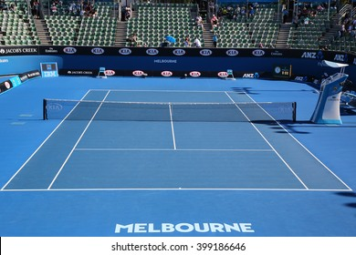
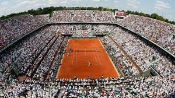
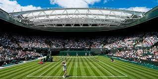
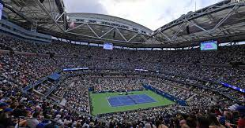
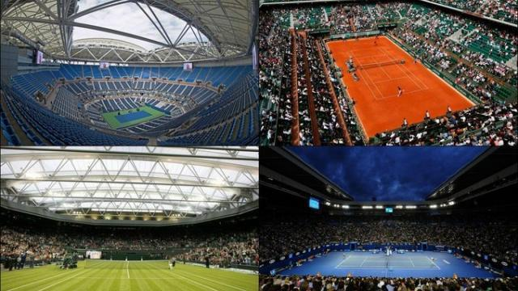
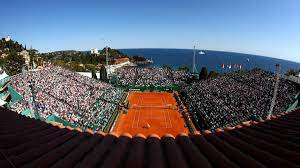
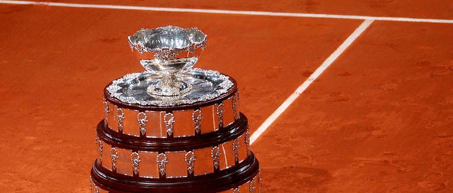
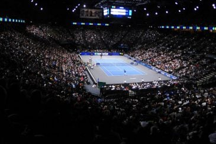

Les différents tournoi au Tennis
Sur cette page vous trouverez les différents tournois existant au Tennis ainsi que des informations concernant chaque tournoi.
Open d'Australie :
L'Open d'Australie est l'un des tournois de tennis de la catégorie du Grand Chelem organisé depuis 1905. Il se déroule chaque année au Melbourne Park, à Melbourne en Australie et a lieu au mois de janvier et en début février.
Le tournoi s'est d'abord joué sur gazon de 1905 à 1987 et se dispute depuis 1988 sur une surface synthétique en dur.

Roland Garros :
Les Internationaux de France, ou Tournoi de Roland-Garros, ou plus simplement Roland-Garros par métonymie, est un tournoi de tennis sur terre battue créé en 1925 et qui se tient annuellement depuis 1928 à Paris, dans le stade Roland-Garros. Il succède au Championnat de France créé en 1891.
Organisé par la Fédération française de tennis (FFT), il se déroule lors de la dernière semaine de mai et la première semaine de juin. Il est l'un des quatre tournois du Grand Chelem, le deuxième dans le calendrier après l'Open d'Australie en janvier. Suivent le tournoi de Wimbledon, se déroulant lors de la dernière semaine de juin et la première semaine de juillet, puis l'US Open, commençant à la fin du mois d’août. Dans le monde du tennis à majorité anglophone, le tournoi est aussi connu sous le nom de « French Open » depuis 1968, première année de l'ère Open.
Les Internationaux de France de tennis sont le plus grand tournoi de la saison de tennis sur terre battue et le dernier tournoi du Grand Chelem se disputant sur cette surface, depuis que l'US Open a abandonné celle-ci en 1978. De nombreux joueurs issus de nombreuses régions du globe où le tennis se joue majoritairement sur terre battue, telles l'Amérique latine ou l'Europe du Sud, voient en Roland-Garros le plus important rendez-vous de l'année. Se jouant sur surface lente et ne figurant pas de jeu décisif dans la dernière manche, le tournoi est parfois considéré comme étant le tournoi de tennis le plus éprouvant physiquement3.
Le record de victoires en simple, hommes et femmes confondus, appartient à Rafael Nadal qui s'est imposé treize fois entre 2005 et 20204. Ce record est aussi celui de tous les tournois du Grand Chelem, depuis que celui-ci existe.

Wimbledon :
Le tournoi de Wimbledon ou The Championships, souvent abrégé par métonymie en Wimbledon, est un tournoi de tennis se déroulant annuellement dans le quartier éponyme du borough londonien de Merton dans la banlieue sud-ouest de Londres. Joué depuis le 3 juillet 1877, il est le second plus ancien tournoi de tennis au monde 1. Il est depuis ses débuts organisé par l'All England Lawn Tennis and Croquet Club, un club sportif anglais. D'abord uniquement ouvert aux hommes, il s'ouvre aux femmes en 1884. À partir de 1968 et comme tous les autres tournois, il s'ouvre aux professionnels. Aux côtés du simple messieurs et du simple dames se déroulent aussi des compétitions de double messieurs, double dames et double mixte. Le tournoi fait partie de la catégorie des Grands Chelems au nombre de quatre : l'Open d'Australie, les Internationaux de France de tennis (Roland-Garros), Wimbledon et l'US Open de tennis. Ce sont les tournois de tennis les plus importants et Wimbledon est souvent considéré comme le plus prestigieux d'entre eux par ceux qui se fondent sur l'histoire.
Se jouant sur deux semaines, de la dernière semaine de juin à la première semaine de juillet, il est le point culminant de la très courte saison sur gazon. En effet, c'est actuellement le dernier tournoi du Grand Chelem et le dernier tournoi important à se jouer sur cette surface. De fait, Wimbledon a longtemps été le temple du tennis offensif en opposition aux tournois sur terre battue notamment et les joueurs pratiquant le service-volée tels John McEnroe, Pete Sampras, Boris Becker ou Martina Navrátilová font partie des joueurs les plus titrés de l'ère Open. Toutefois, un changement dans la composition du gazon en 2001 a modifié les caractéristiques de celui-ci, accroissant notamment la hauteur des rebonds. Depuis lors, des joueurs au tempérament plus défensif parviennent à s'exprimer de plus en plus à Wimbledon tandis que le service-volée est de moins en moins pratiqué.

US Open :
L'US Open de tennis est un tournoi de tennis se déroulant annuellement dans le parc municipal de Flushing Meadows-Corona Park à New York, au sein de l'USTA National Tennis Center. Appelé « US National Championships » jusqu'en 1967, il se joue depuis 1881 et a connu plusieurs implantations. D'abord joué à Newport, il déménage ensuite au sein du West Side Tennis Club avant de s'implanter à Flushing Meadows en 1978. D'abord uniquement ouvert aux hommes, les femmes font leur entrée dans le tournoi en 1887. À partir de 1968 et comme tous les autres tournois, il s'ouvre aux professionnels. Aux côtés du simple messieurs et simple dames se déroulent aussi des compétitions de double messieurs, double dames et double mixte. Le tournoi fait partie de la catégorie des tournois du Grand Chelem, comme l'Open d'Australie, les Internationaux de France de tennis (Roland-Garros) et Wimbledon. L'US Open est la dernière levée de l'année et se joue traditionnellement entre la fin août et le début du mois de septembre.
Se jouant sur deux semaines, il est le point culminant de la saison estivale américaine sur dur qualifiée d'« US Open Series ». Après s'être joué de 1881 à 1975 sur gazon, l'US Open s'est brièvement tenu sur terre battue américaine de 1975 à 1977 avant d'adopter une surface dure de type ciment puis Decoturf de 1978 à 2019. Ces deux dernières surfaces, plus neutres que le gazon ou la terre battue, sont relativement rapides et avantagent plutôt les joueurs de type offensif comme les serveurs-volleyeurs (John McEnroe ou encore Pete Sampras). Après le changement de composition du gazon de Wimbledon en 2000, l'US Open est devenu le Grand Chelem le plus rapide mais du fait d'une disparition du service-volée et d'un léger ralentissement de la surface, le jeu pratiqué à l'US Open privilégie principalement les échanges de fond du court. Depuis 2020, l'épreuve est disputée sur dur Laykold 3.

Le grand Chelem
Au tennis, le Grand Chelem est le fait de remporter la même année, les quatre tournois majeurs du circuit international organisés sous l'égide de la Fédération internationale de tennis1,2, à savoir :
l'Open d'Australie à Melbourne (type de surface : dur « GreenSet »), qui commence la troisième semaine de janvier ;
les Internationaux de France de tennis (ou « Roland-Garros ») à Paris (type de surface : terre battue), qui commencent la dernière semaine de mai ;
le tournoi de Wimbledon (ou « The Championships ») à Londres (type de surface : gazon), qui commence la première semaine de juillet ;
l'US Open de tennis à New York (type de surface : dur « Laykold »), qui commence la dernière semaine d'août.
Ces quatre tournois majeurs, appelés en conséquence « tournois du Grand Chelem »3, sont les plus prestigieux et les plus difficiles à gagner sur le circuit professionnel. Ils se déroulent en effet pour chacun sur deux semaines consécutives, sans compter les phases de qualifications et regroupent toutes les épreuves en simple et en double, hommes, femmes et mixte. Pour le simple messieurs, chaque tour se joue en trois sets gagnants, contre deux sets gagnants pour les autres épreuves : simple dames, double dames, double messieurs, double mixte, juniors, seniors et tennis en fauteuil roulant. Seul à Wimbledon, le double messieurs se joue toujours en trois sets gagnants, ce qui le rend plus prestigieux encore. Les tableaux se composent de sept matchs à élimination directe pour chaque participant(e), avec une première semaine dédiée aux trois premiers tours, puis, en seconde semaine, un huitième de finale, un quart de finale, une demi-finale et une finale.

Monte Carlo :
Le tournoi de Monte-Carlo ou Rolex Monte Carlo Masters est un tournoi de tennis professionnel masculin du circuit ATP joué sur terre battue.
Fondé en 1897, il est organisé chaque année depuis 1928 au Monte-Carlo Country Club, situé sur la commune Roquebrune-Cap-Martin en France. Disputé par des joueurs professionnels depuis 1969, il fait partie des tournois les plus prestigieux au monde. En 1990, il intégré à la catégorie des Championship Series Single Week, aujourd'hui appelée Masters 1000.
Rafael Nadal détient le record de titres en simple ayant gagné le trophée à onze reprises de 2005 à 2012, puis de 2016 à 2018.
Le tournoi féminin a été organisé conjointement à l'épreuve masculine jusqu'en 1976 et été disputé pour la dernière fois en 1982.

La coupe Davis
La Coupe Davis est la plus prestigieuse des compétitions internationales annuelles de tennis masculin par équipes. Créée en 1900 par Dwight Davis, elle est gérée par la Fédération internationale de tennis. Initialement appelée International Lawn Tennis Challenge (littéralement : « défi international de tennis sur gazon »), elle n'oppose d'abord que la Grande-Bretagne et les États-Unis et ne s'ouvre à d'autres nations qu'à partir de 1904. Elle ne prend son nom actuel qu'en 1945 après la mort de son créateur. Depuis 2017, elle est également nommée Coupe du monde de tennis, tout comme la Fed Cup1,2, qui est considérée comme son équivalent féminin. Le caractère collectif de la Coupe Davis tranche avec les autres grands tournois de tennis, sport individuel par excellence malgré l'existence du double.
Le plus grand nombre de titres est détenu par les États-Unis avec 32 victoires sur 61 finales disputées. En deuxième position vient l'Australie, avec 28 victoires sur 47 finales disputées, dont quatre titres gagnés aux côtés de la Nouvelle-Zélande sous le nom d'Australasie. La dernière édition disputée sur ce format plus que centenaire est remportée en 2018 par la Croatie qui bat la France par 3 victoires à 1.
Le 16 août 2018, à Orlando, les membres de la Fédération internationale de tennis adoptent à la majorité des deux-tiers (71,4 % des voix) une réforme radicale de la compétition vieille de 118 ans. À partir de 2019, elle ne se dispute plus que sur une semaine, en fin de saison, avec dix-huit équipes nationales, des matchs au meilleur des trois sets (deux simples et un double), sur terrain neutre et est plus richement dotée3. Le but est d'attirer de nouveau les meilleurs joueurs de l'ATP qui, une fois que la coupe Davis a été gagnée, n'y participaient plus, rendant les résultats peu crédibles aux yeux de certains spectateurs et entraînant une fuite du public et des sponsors4,5. Cependant, de nombreux joueurs (actuels et anciens) expriment leur hostilité vis-à-vis de cette réforme6. De plus, de nombreuses stars du circuits, telles Alexander Zverev7, Novak Djokovic et Roger Federer8, critiquent le format de cette nouvelle compétition et surtout sa place dans le calendrier.

Le Masters Bercy :
Le Masters de Paris-Bercy2 est un tournoi de tennis masculin (ATP) qui se déroule chaque année au Palais omnisports de Paris-Bercy (désormais appelé AccorHotels Arena pour des raisons de sponsorat) entre fin octobre et début novembre. Ce tournoi, disputé en salle, se jouait jusqu'en 2006 sur synthétique et depuis sur dur. Il constitue le dernier tournoi majeur de la saison avant les ATP World Tour Finals. Créée en 1986 en remplacement du Tournoi de Paris, cette épreuve fait partie depuis 1990 des ATP Masters 1000, les neuf compétitions les plus importantes du circuit ATP après les quatre tournois du Grand Chelem. Il existait une épreuve équivalente de 1972 à 1982. Depuis 2009, c'est le seul des Masters 1000 à être disputé en intérieur.
Novak Djokovic détient le record de titres : 6, ainsi que le record de succès consécutifs (3). Trois Français ont remporté le titre : Guy Forget en 1991, Sébastien Grosjean en 2001 et Jo-Wilfried Tsonga en 2008. Stan Smith est le premier à avoir conservé son titre (l'épreuve se déroulant en extérieur) et échoua en finale contre Ilie Năstase pour un troisième titre consécutif (de nouveau en intérieur, en 1973). Novak Djokovic est le seul joueur à avoir réussi à conserver son titre 2 fois. 6 joueurs l'ont défendu en finale sans succès (Smith, Becker, Forget, Sampras, Nalbandian et Ferrer).
Ilie Năstase, Andre Agassi, Roger Federer et Novak Djokovic sont les quatre seuls joueurs à avoir remporté les deux tournois parisiens, Bercy et Roland-Garros. La même année, qui plus est, pour Ilie Năstase (1973), Andre Agassi (1999) et Novak Djokovic (2021).
